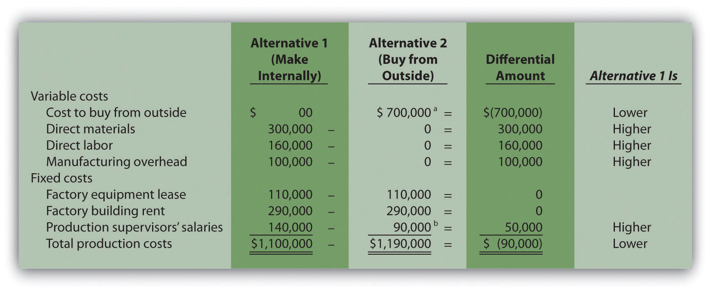
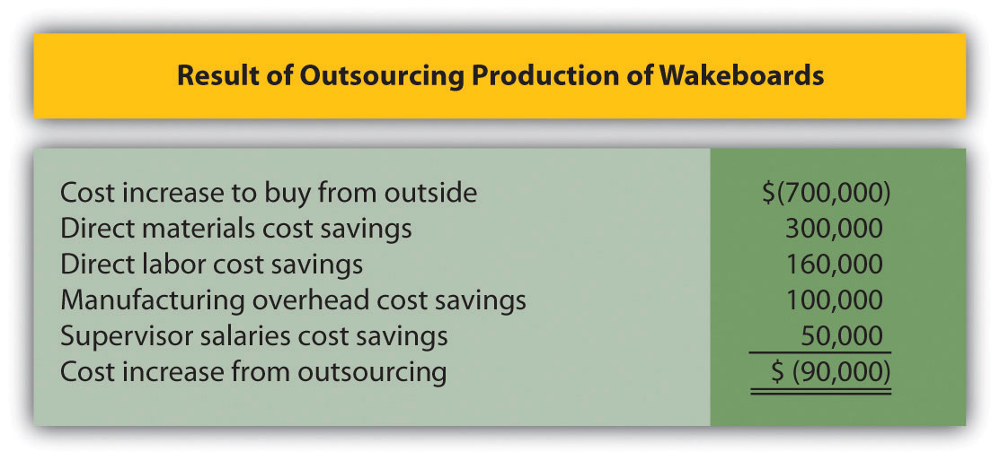

Question: With the differential analysis format in hand, we can now go back to Best Boards, Inc., introduced at the beginning of the chapter. Recall that Best Boards produces each wakeboard for $110, and Jim Muller, vice president of operations, received a bid for $70 per board from an outside manufacturer. Best Boards’ president asked the company’s accountant, Amy Eckstrom, to investigate whether it makes sense for Best Boards to hire an outside company to produce the wakeboards. What information should Amy provide that will help management make this decision?
Answer: Table 7.1 "Make-or-Buy Decision" presents the costs that the vice president of operations at Best Boards must evaluate in deciding whether to make the wakeboards or buy them from an outside company. This is called a make-or-buy decision because the company must decide whether to make the product internally or buy the product from an outside firm (often called outsourcing).
Table 7.1 Make-or-Buy Decision
| Costs to Make Wakeboard | Costs to Buy Wakeboard | |
|---|---|---|
| Variable production costs | Direct materials | Wakeboards from supplier |
| Direct labor | ||
| Manufacturing overhead | ||
| Fixed production costs | Factory equipment lease | Factory equipment lease |
| Factory building rent | Factory building rent | |
| Supervisor salaries | Supervisor salaries |
Question: What information did Amy find to help Best Boards with the decision whether to make their own wakeboards or buy them from an outside supplier?
Answer: After further research, Amy identified the following product costs associated with wakeboard production at Best Boards:
Since Best Boards produces 10,000 wakeboards each year, the product cost per unit is $110 (= $1,100,000 ÷ 10,000 units). However, Amy must identify which of the costs listed previously are differential costs if the company acquires the wakeboards from an outside producer. That is, Amy must determine which costs will change and which will remain the same. Here’s what she found:
Question: Amy must now prepare a differential analysis to determine which alternative is best for the company. Her analysis appears in Figure 7.2 "Make-or-Buy Differential Analysis for Best Boards, Inc.". Because the focus of make-or-buy decisions is on product costs, and because sales revenue is not differential to this decision, it is not necessary to include sales revenue in the analysis. This in turn eliminates the need to show the contribution margin or net income. (Even if sales revenue were included, the outcome would remain the same.) What does Amy’s analysis tell us?
Figure 7.2 Make-or-Buy Differential Analysis for Best Boards, Inc.
a $700,000 = $70 per unit × 10,000 units.
b One supervisor must be paid $90,000 per year even if the company buys the product. The other supervisor, who is paid $50,000 per year, can be let go if the company buys the product.
Answer: Realizing that the information shown in Figure 7.2 "Make-or-Buy Differential Analysis for Best Boards, Inc." does not provide the savings initially hoped for, Amy presents the unfavorable analysis to Jim Muller and the company’s president, Bob Lee. Refer to Figure 7.2 "Make-or-Buy Differential Analysis for Best Boards, Inc." as you follow Amy’s comments to Bob and Jim about her analysis.
| Bob: | Hi, Amy, what have you got for us? |
| Amy: | As you can see from my analysis, outsourcing the production of our wakeboards does not reduce overall production costs. |
| Jim: | How can that be? I got a bid from an outside supplier for $70 per board, and our cost to produce the very same board is $110. |
| Amy: | As I mentioned before, the $110 includes costs that do not go away if we outsource production. Let’s look at my analysis. Alternative 1 represents the production costs we incur to make the board ourselves, and Alternative 2 represents the costs we incur if we buy the board from an outside supplier using Jim’s quote of $70 each. |
| Jim: | Well, this certainly explains where the $110 product cost per board comes from if we produce the boards ourselves. I see the total cost of $1,100,000. Divide this by 10,000 units produced annually, and the resulting cost per unit is $110. |
| Amy: | Exactly! Now let’s look at Alternative 2 more carefully. Although we eliminate all variable product costs such as direct materials and direct labor by outsourcing production, several fixed product costs remain. We still must lease the factory equipment at a rate of $110,000 per year, and the factory building lease of $290,000 per year is in effect for several more years. Also, one of our factory supervisors has a long-term contract for $90,000 per year and cannot be let go any time soon. None of these costs can be eliminated if we outsource production. Add these costs to the $700,000 cost incurred to purchase the boards from a supplier, and the total cost of $1,190,000 is $90,000 higher than if we produce the boards ourselves. |
| Bob: | Perhaps we should consider outsourcing in a few years as these long-term commitments expire. Jim, I commend you for your creative approach to reducing costs, but the numbers don’t make it feasible for us to discontinue production and buy the products elsewhere. |
Question: The Differential Amount column presented in Figure 7.2 "Make-or-Buy Differential Analysis for Best Boards, Inc." indicates Best Boards would be better off producing wakeboards internally. However, management may want a more concise explanation of why production costs are $90,000 higher when outsourcing production. How can we present this information in a more concise format?
Answer: We show a more concise presentation in Figure 7.3 "Summary of Differential Analysis for Best Boards, Inc.", which includes the Differential Amount column shown in Figure 7.2 "Make-or-Buy Differential Analysis for Best Boards, Inc." along with a brief description for each item. Look closely at Figure 7.2 "Make-or-Buy Differential Analysis for Best Boards, Inc." to confirm that the Differential Amount column matches Figure 7.3 "Summary of Differential Analysis for Best Boards, Inc.", and review the explanation of the difference for each line item. As you compare these two figures, notice that only differential costs are presented in Figure 7.3 "Summary of Differential Analysis for Best Boards, Inc.", and therefore costs for the factory equipment lease, factory building rent, and a portion of supervisor salaries are excluded from Figure 7.3 "Summary of Differential Analysis for Best Boards, Inc.". That is, costs that do not differ from one alternative to another are excluded from the summary differential analysis since this information is irrelevant to the decision. The amounts in parentheses in Figure 7.3 "Summary of Differential Analysis for Best Boards, Inc." indicate a negative impact on profit, and amounts without parentheses indicate a positive impact on profit.
Figure 7.3 Summary of Differential Analysis for Best Boards, Inc.
Note: Amounts shown in parentheses indicate a negative impact on profit, and amounts without parentheses indicate a positive impact on profit.
The analysis shown in Figure 7.3 "Summary of Differential Analysis for Best Boards, Inc." is particularly useful if all costs are not easily identified, and differential costs can be determined. After all, the goal of differential analysis is to analyze the costs that differ from one alternative to the next.
We often use the term avoidable costA cost that can be avoided, or eliminated, if one alternative is chosen over another. to describe a cost that can be avoided, or eliminated, if one alternative is chosen over another. If Best Boards chooses to buy the product from an outside producer, the company avoids such costs as direct materials, direct labor, manufacturing overhead, and the salary of one supervisor. In this context, avoidable cost is the same as differential cost.
Source: Photo courtesy of C.G.P. Grey, http://www.cgpgrey.com/.
Outsourcing Construction
Salt Lake City, Utah, recently built a $65 million library. The library’s façade was assembled from precast concrete panels that a company called Pretecsa produced in a plant near Mexico City. Trucks hauled 140 truckloads of these panels—each truckload averaging 10 tons—2,350 miles from Mexico City to Salt Lake City. In all, four million pounds of concrete were shipped. As the director of Pretecsa noted, “The idea of manufacturing a building a couple of thousand miles away and then exporting it, well it was considered crazy.”
The manager in charge of the library construction had tried to obtain the concrete panels from sources in the United States. He stated, “We contacted precast contractors in Phoenix, Denver, and Las Vegas, but they didn’t feel they could do it cheaply enough, once you factored in their shipping costs. Pretecsa’s low-cost labor made up for the higher shipping costs, and they came in the cheapest.”
Pretecsa disclosed that it took 163,000 labor hours to produce the concrete panels and charged $2.5 million for all its services, including materials. Labor costs alone in the United States would have been $3 million.
Source: Joel Millman, “Blueprint for Outsourcing,” The Wall Street Journal, March 3, 2004.
Quality Bikes, Inc., currently produces racing bikes. Management is interested in outsourcing production of these bikes to a reputable manufacturing company that can supply the bikes for $600 per unit. Quality Bikes incurs the following annual production costs to produce 2,000 racing bikes internally:
Outsourcing production eliminates all variable production costs, the production supervisor’s salary, and factory insurance costs. Factory building and equipment lease costs will remain the same regardless of the decision to outsource or to produce internally.
Solution to Review Problem 7.2
*$1,200,000 = $600 per unit × 2,000 units.
Note: Amounts shown in parentheses indicate a negative impact on profit, and amounts without parentheses indicate a positive impact on profit.